Spider-Man 2099 (1992 - 1996)
| Comic Book | Release Date | Cover |
|---|---|---|
| Spider-Man 2099 #1 Spider-Man 2099 |  | |
| Spider-Man 2099 #2 Nothing Ventured... | 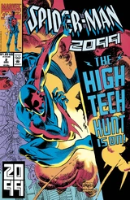 | |
| Spider-Man 2099 #3 Nothing Gained | 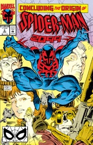 | |
| Spider-Man 2099 #4 The Specialist | 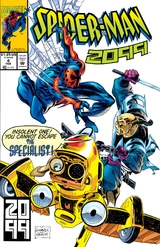 | |
| Spider-Man 2099 #5 Blood Oath | 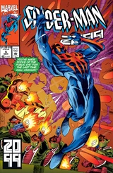 | |
| Spider-Man 2099 #6 Downtown | 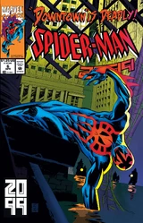 | |
| Spider-Man 2099 #7 Wing and a Prayer | 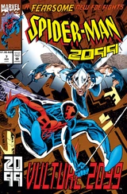 | |
| Spider-Man 2099 #8 Flight of Fancy | 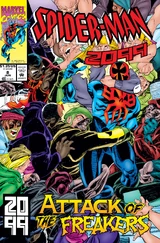 | |
| Spider-Man 2099 #9 Home Again, Home Again | 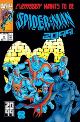 | |
| Spider-Man 2099 #10 Mother's Day | 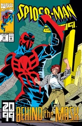 | |
| Spider-Man 2099 #11 Under Siege | 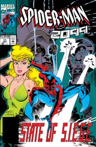 | |
| Spider-Man 2099 #12 Death from Ωn High | 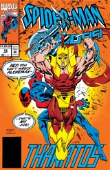 | |
| Spider-Man 2099 #13 Prophet and Loss | 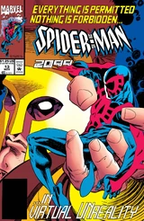 | |
| Spider-Man 2099 #14 Boiling Point | 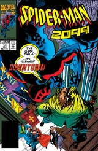 | |
| Spider-Man 2099 #15 The Rise of the Hammer | 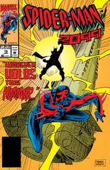 | |
| Spider-Man 2099 #16 The Hammer Strikes! | 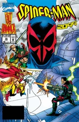 | |
| Spider-Man 2099 #17 Ye Gods | 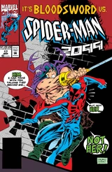 | |
| Spider-Man 2099 #18 Blown Circuits | 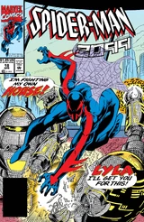 | |
| Spider-Man 2099 #19 Meltdown | 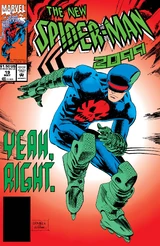 | |
| Spider-Man 2099 #20 Crash and Burn | 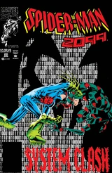 | |
| Spider-Man 2099 #21 Parlor Games | 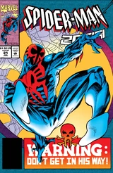 | |
| Spider-Man 2099 #22 Did You Just Say...? | 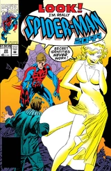 | |
| Spider-Man 2099 #23 No Fury | 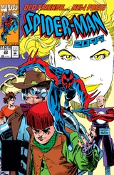 | |
| Spider-Man 2099 #24 Assault and Batteries | 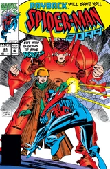 | |
| Spider-Man 2099 #25 Truth Hurts | 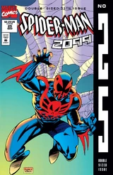 | |
| Spider-Man 2099 #26 Hostile Takeover | 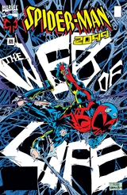 | |
| Spider-Man 2099 #27 Deadly Nightshade | 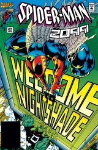 | |
| Spider-Man 2099 #28 Travesty! | 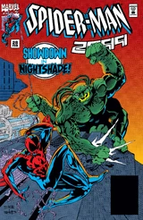 | |
| Spider-Man 2099 #29 Going Out of Business Sale | 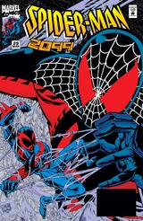 | |
| Spider-Man 2099 #30 Bugaboo | 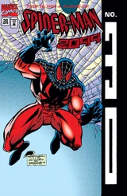 | |
| Spider-Man 2099 #31 Route 666 | 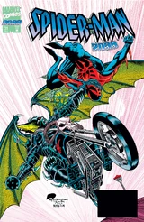 | |
| Spider-Man 2099 #32 Day of the Dead | 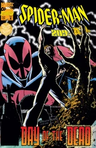 | |
| Spider-Man 2099 #33 Strange Whine | 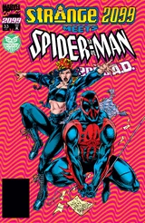 | |
| Spider-Man 2099 #34 Mr. O'Hara Goes to Washington | 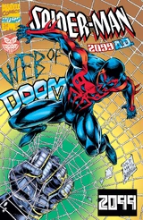 | |
| Spider-Man 2099 #35 Blood from a Stone | 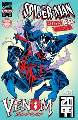 | |
| Spider-Man 2099 #36 Venom | 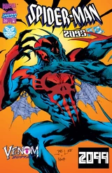 | |
| Spider-Man 2099 #37 It Tickled When We Kissed | 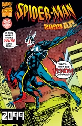 | |
| Spider-Man 2099 #38 Silent Scream | 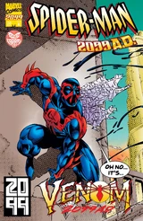 | |
| Spider-Man 2099 #39 Brother's Keeper | 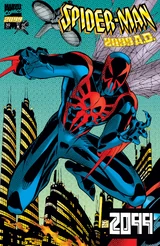 | |
| Spider-Man 2099 #40 Judas Goat | 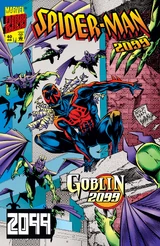 | |
| Spider-Man 2099 #41 Despair | 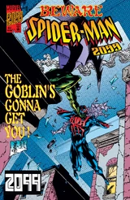 | |
| Spider-Man 2099 #42 Earth | 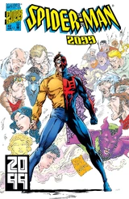 | |
| Spider-Man 2099 #43 Water | 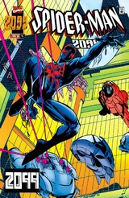 | |
| Spider-Man 2099 #44 The Last Dance | 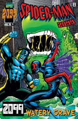 | |
| Spider-Man 2099 #45 Drowning by Inches | 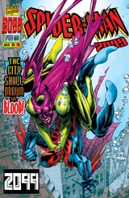 | |
| Spider-Man 2099 #46 A House Divided | 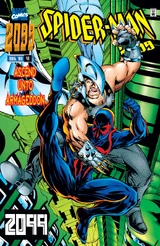 |